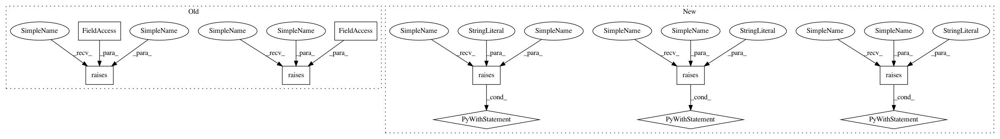

4aa86acaeabd91dd6175b74c25fd3fdcbac531f0,mne/viz/tests/test_3d.py,,test_limits_to_control_points,#,298
Before Change
clim=dict(pos_lims=(5, 10, 15, 20)), **kwargs)
pytest.raises(ValueError, stc.plot,
clim=dict(pos_lims=(5, 10, 15), kind="foo"), **kwargs)
pytest.raises(ValueError, stc.plot, colormap="mne", clim="foo", **kwargs)
pytest.raises(ValueError, stc.plot, clim=(5, 10, 15), **kwargs)
pytest.raises(TypeError, plot_source_estimates, "foo", clim="auto",
**kwargs)
pytest.raises(ValueError, stc.plot, hemi="foo", clim="auto", **kwargs)
// Test handling of degenerate data: thresholded maps
stc._data.fill(0.)
with pytest.warns(RuntimeWarning, match="All data were zero"):
After Change
// Test for correct clim values
with pytest.raises(ValueError, match="monotonically"):
stc.plot(clim=dict(kind="value", pos_lims=[0, 1, 0]), **kwargs)
with pytest.raises(ValueError, match=r".*must be \(3,\)"):
stc.plot(colormap="mne", clim=dict(pos_lims=(5, 10, 15, 20)), **kwargs)
with pytest.raises(ValueError, match="must be "value" or "percent""):
stc.plot(clim=dict(pos_lims=(5, 10, 15), kind="foo"), **kwargs)
with pytest.raises(ValueError, match="must be "auto" or dict"):
stc.plot(colormap="mne", clim="foo", **kwargs)
with pytest.raises(TypeError, match="must be an instance of"):
plot_source_estimates("foo", clim="auto", **kwargs)
with pytest.raises(ValueError, match="hemi"):
stc.plot(hemi="foo", clim="auto", **kwargs)
with pytest.raises(ValueError, match="Exactly one"):
stc.plot(clim=dict(lims=[0, 1, 2], pos_lims=[0, 1, 2], kind="value"))
// Test handling of degenerate data: thresholded maps
In pattern: SUPERPATTERN
Frequency: 4
Non-data size: 10
Instances
Project Name: mne-tools/mne-python
Commit Name: 4aa86acaeabd91dd6175b74c25fd3fdcbac531f0
Time: 2018-09-21
Author: larson.eric.d@gmail.com
File Name: mne/viz/tests/test_3d.py
Class Name:
Method Name: test_limits_to_control_points
Project Name: mne-tools/mne-python
Commit Name: a610fbcacda540c1ebff6c9500c85644aaef8ae7
Time: 2020-05-28
Author: larson.eric.d@gmail.com
File Name: mne/viz/tests/test_evoked.py
Class Name:
Method Name: test_plot_white
Project Name: mne-tools/mne-python
Commit Name: 4a52511469992d2abe0686bc6d1588f7469cbb3f
Time: 2019-05-08
Author: larson.eric.d@gmail.com
File Name: mne/decoding/tests/test_receptive_field.py
Class Name:
Method Name: test_receptive_field_nd
Project Name: mne-tools/mne-python
Commit Name: cd53a2712c341a1641989962950f07fdb6b11a85
Time: 2019-01-25
Author: hubert.jbanville@gmail.com
File Name: mne/io/tests/test_apply_function.py
Class Name:
Method Name: test_apply_function_verbose